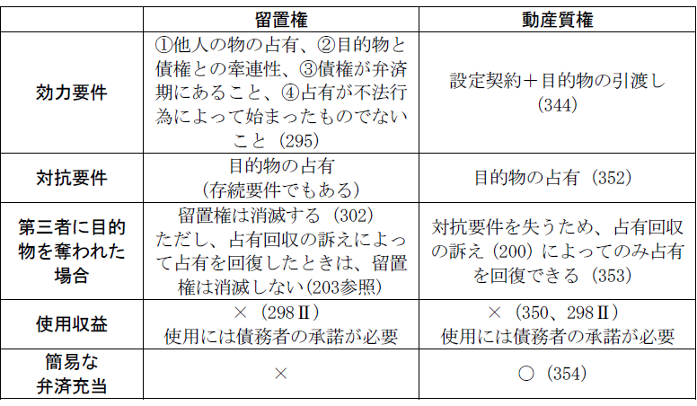
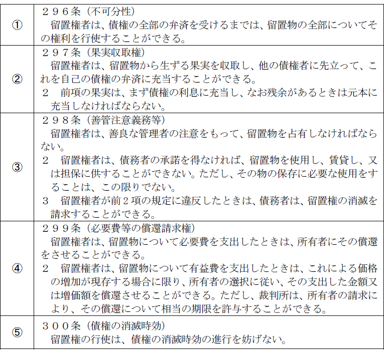

第３編 担保物権
第４章 留置権
第１節 意義
：他人の物の占有者が、その物に関して生じた債権を有するときに、その債権の弁済を受けるまで、その物を留置できる権利（295条）
他人の物の占有者が、その物に関して生じた債権を有するときには、その債権の弁済を受けるまで、その物の返還を拒絶することができるものとすることが公平の原則に適うと考えたのである。
1. 担保物権性（通有性）
(1) 付従性・随伴性・不可分性あり。
(2) 物上代位性はない。
留置権は目的物を留置することがその主たる内容であって、目的物の交換価値を把握するものではないからである。
2. 物権性
(1) 対抗力
債権の弁済を受けるまでは、何人に対してもその物を留置することができる。
(2) 追及力
追及力がない。占有を失えば、留置権は消滅する（302条本文）。
(3) 不動産上の留置権
不動産の上にも成立する。対抗要件は不要である。
1. 共通点
留置権、同時履行の抗弁権（533条）は、ともに公平の原則から認められている。
2. 相違点
(1) 留置権は物権であるからいったん成立したら、目的物が譲渡されてもその譲受人に対しても主張できる。これに対し、同時履行の抗弁権は主張できなくなる。
(2) 留置権は他人の物を留置することができるにとどまるが、同時履行の抗弁権では、給付の内容いかんを問わず履行を拒絶できる。
(3) 留置権は、債務者が代担保を提供することによって消滅させられるが（301条）、代担保で同時履行の抗弁権を消滅させることはできないと解されている。
(4) 同時履行の抗弁権で履行を拒絶する債務は、相手方の不履行度合に応じて割合的であり得るが、留置権には不可分性がある（296条）。
第２節 成立要件
① 他人の物を占有していること（295条１項本文）
② その物に関して生じた債権であること（目的物と債権との牽連関係、295条１項本文）
③ 債権が弁済期にあること（295条１項ただし書）
④ 占有が「不法行為」によって始まったものではないこと（295条２項）
「他人」には債務者以外の第三者も含む（通説）。
1. 牽連関係
①債権が物自体から生じた場合
②債権が物の返還義務と同一の法律関係又は事実関係から生じた場合
2. 留置権成立の範囲
(1) 売買代金債権と建物
建物を売却後、売主が引き続き建物を占有していたが、買主が代金を支払う前に第三者に当該建物を売却し、売主が第三者から建物の明渡請求を受けたときは、買主に対する売買代金債権を被担保債権とする留置権が成立しているため、売主は建物を留置することができる（最判昭47.11.16）。
(2) 建物買取請求権と敷地
建物買取請求権を有する者がある場合、留置権が成立し、建物のみならずその敷地をも留置することができる（大判昭14.８.24・通説）。
理由①：建物買取請求権を有する者は、その支払を受けるまで建物を留置できるのであるから、この建物引渡拒絶の効力として、敷地の引渡しの拒絶をも認められるべきである。
理由②：もし敷地について留置権の成立を否定すると、留置権者は建物を土地から分離した上で留置せざるを得ず、留置の効力を著しく弱めるのみならず、社会通念にも反する結果となる。
(3) 費用償還請求権と家屋
家屋につき必要費・有益費を費やした者がある場合、費用償還請求権を被担保債権とする留置権が成立し、その償還を請求（608条）する際に、家屋自体を留置することができる（大判昭14.４.28・通説）。費用部分と他の部分とは明確に区別することが難しく、独立性が全くないか、少なくとも独立性が乏しいと考えられるためである。
(4) 造作買取請求権と家屋
造作買取請求権（借地借家法33条）を有する者は、造作のみならず、家屋をも留置することができるか。
→ 留置することができない（最判昭29.１.14）。
理由①：建物と造作とは別個の存在であり、かつ造作代金債務と建物引渡債務には対価関係がない。
理由②：従物に関する債権で主物たる建物全体の明渡しを拒絶することができるのは公平に反する。
(5) 敷金返還請求権と家屋
→ 留置権は成立しない（最判昭49.９.２）。
敷金には、賃借人の与えた損害を担保するという保証金の意味もあるので、敷金返還請求権は建物の明渡し後に発生することから、建物明渡義務は先履行である。
(6) 二重譲渡と目的物の留置
不動産を二重に譲渡し、第１譲受人が当該不動産の引渡しを受けた後、第２譲受人が登記を具備して第１譲受人に対してその引渡しを請求した場合、第１譲受人は譲渡人に対する損害賠償請求権を保全するために留置権を主張することはできるか。
→ 留置権は成立しない（最判昭43.11.21・通説）。
かかる損害賠償請求権は、引渡請求権者である第三者とは別人に対するものであり、債務成立当初から、被担保債権の債務者と留置権による引渡拒絶の相手方が別人であるときにまでその成立範囲を拡大することは、第三者の負担により債権者を保護するものであり、留置権制度の本来の趣旨を逸脱する。
(7) 他人物売買と目的物の留置
他人の物の売買による買主が、その物の真の所有者から返還請求を受けた場合、買主は留置権を行使できない（最判昭51.6.17）。買主の売主に対する損害賠償請求権と、所有者の買主に対する引き渡し請求権とは牽連関係に立たないからである。
(8) 土地賃貸借と新所有者
対抗力を有しない賃借権の目的不動産が譲渡され、譲受人が明渡しを請求してきたとき、賃借人は前所有者に対して取得する損害賠償請求権に基づいて留置権を主張できるか。
→ 留置権は成立しない（大判大11.８.21）。
賃借物を使用・収益する債権は「物に関して生じた債権」ではないため、このような物自体を目的とする債権は、留置権の成立要件とはならない。
債務者に期限が許与されたときは、留置権は成立しない（ex. 196条２項ただし書、608条２項ただし書等）。
1. 盗人が盗品に必要費を加えても留置権は成立しない。
2. 不法占有と295条２項
Ｑ 賃借人が、賃貸借契約終了後に必要費を支出した場合等、当初占有権原があったが、後に権原がなくなった場合（権原喪失型）が問題となる。
→ 295条２項類推適用（最判昭51.６.17・通説）
無権原占有につき広く295条２項の類推適用を認め、悪意ないし善意有過失占有者には留置権を否定する。
（理由）
① 占有すべき権利がないことにつき悪意又は善意有過失の者が他人の物を占有することは、不法であることに変わりがない。
② 無権原占有につき広く295条２項の類推適用を認めることは、公平の理想に立脚する留置権の性質によく適合する。
第３節 効力
すべての人に対して行使することができる。→同時履行の抗弁権と異なる。
留置権の主張があった場合は、引換給付判決をする（最判昭33.３.13、最判昭33.６.６）。
留置的効力を有する結果として、事実上の優先弁済を受けることができる。
1. 果実には天然果実のみならず法定果実も含まれる。
2. 目的物の自己使用による利得についても、果実に準じて債権に充当できる（大判大７.10.29）。
3. 収取された果実は、まず債権の利息に充当し、なお残額があるときは元本に充当しなければならない（297条２項）。
1. 必要費
留置権者は、留置物について必要費を支出したときは、所有者にその償還を請求できる（299条１項）。
※ 必要費の償還請求権を被担保債権として建物を留置中、留置物についてさらに必要費を支出した場合は、既に生じている費用償還請求権と共に、上記建物について留置権を行使することができる（最判昭33.１.17）。
2. 有益費
留置権者は、留置物について有益費を支出したときは、その価格の増加が現存する場合に限り、所有者の選択に従い、支出した金額又は増価額を償還させることができる（299条２項本文）。
ただし、裁判所は所有者の請求によって、その償還について相当の期限を許与することができる（299条２項ただし書）。
1. 善管注意義務（298条１項）
2. 債務者（物の所有者）の承諾を得なければ、留置物を使用し、賃貸し、又は担保に供することはできない（298条２項本文）。
3. 保存に必要な使用は、債務者の承認がなくてもできる（298条２項ただし書）。
① 借地人が従来通り居住を継続することはできる（大判昭10.５.13）が、家賃相当額を不当利得として返還すべきである（大判昭13.12.17）。
② 借地の場合、地上建物を第三者に賃貸することは、保存に必要な使用とはいえない（大判昭10.12.24）。
第４節 消滅
留置権者が目的物の占有を喪失すれば、留置権は消滅する（302条本文）。ただし、留置権者が目的物を賃貸し、又は質権の目的とした場合には、留置権者は、いまだ代理人を通じて占有しているので、留置権を失わない（302条ただし書）。
留置権者が占有を奪われたときは、占有回収の訴え（200条）によって占有の回復を図ることができる。留置権に基づく返還請求権はない。
留置権者が善管注意義務に違反したり、債務者の承諾を得ないで目的物を使用し、賃貸し、又は他の担保に供した場合には、債務者は、留置権の消滅を請求することができる。
※ この消滅請求権は、債務者の留置権者に対する一方的な意思表示によって留置権消滅の効果を発生させる形成権である（通説）。
留置権を行使していても、被担保債権の消滅時効は進行する（300条）。
被担保債権の時効消滅により、留置権も消滅する。
債務者は、留置権の目的物に代わる相当の担保（代担保）を供して、留置権の消滅を請求することができるが、留置権者の承諾を要する。ちなみに、「担保」には、物的担保・人的担保の双方を含む。
「供して」とは、担保物権を設定し、又は保証契約を締結することをいい、担保物権設定契約の申込み、保証人より保証契約の申込みをするだけでは足らない。
なお、留置権者が承諾しない場合には、留置権者の承諾に代わる裁判（414条２項ただし書）を得て、消滅請求できる（通説）。
【まとめ 留置権と動産質権】

【まとめ 質権に準用される留置権の条文】
